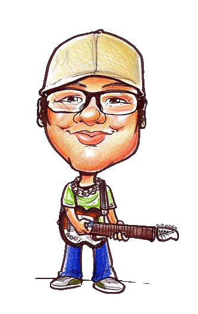
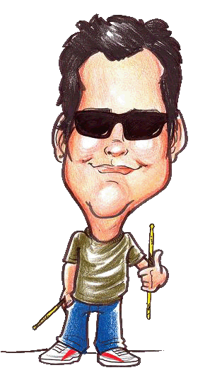
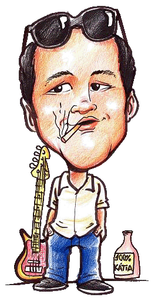

| |
Dino Chaves – Vocalista e Guitarrista
Dino Chaves vocalista, guitarrista e compositor, além de emérito fundador da banda Saída de Emergência. Um cara reservado, objetivo e sistemático. Admira as obras de Raul Seixas, Cazuza, Rage Against The Machine e Gentle Giant, além de ser fã dos arretados Luiz Gonzaga e Jackson do Pandeiro, principalmente pela autenticidade de ambos. Como compositor, Dino mantém suas harmonias e melodias simples e marcantes, sempre com mensagens filosóficas em suas letras, na maioria das vezes baseadas em fatos ocorridos: “Não abro mão da parte política social,religião e cotidiano,sempre na contra-mão da música comercial, e em minha visão o rock é uma forma de contestar musicalmente algumas injustiças sociais”. Seus valores fundamentais para todo trabalho são dois: honestidade e autenticidade. E isso fica evidente no som do Saída, que preza pela originalidade sempre.
Em questão de sabedoria Dino afirma: “O maior artista de todos os tempos é o tempo.”
Instrumentos: Guitarra Fender Telecaster e Violão Fender
Amplificador: Mesa Boogie DC-3/Foot-Switch |
Danilo Godoy - Guitarrista
Danilo Godoy é o mais novo integrante do Saída de Emergência em todos os sentidos: acaba de ingressar na banda e tem apenas 29 anos de idade. Graças a ele o som do Saída ganhou peso, também em todos os sentidos – as influências de Danilo incluem Zakk Wylde, Killswitch Engage, Pearl Jam, Alice in Chains, Metallica e Nickelback. E lembremos que “novo” não significa necessariamente “inexperiente”, pois Danilo demonstra extrema segurança e criatividade e alem disso, antes do Saída ele lecionou música. “Estou passando pela melhor fase de minha vida, pois encontrei no SDE um som muito autêntico e descontraído’, reforça “Há mais de duas décadas não vejo e nem ouço no cenário musical nacional o que estamos fazendo. Agora é hora de cair pra estrada e tocar muito Rock and Roll!”
Instrumentos: Guitarra Fender Stratocaster
Amplificador: JCM 2000 Marshall
Pedais: V-Twin Mesa Boogie/Digital Delay - Boss |

Lok’s Rasmussen - Baterista
Lok’s Rasmussen é o mais bem humorado dos membros da banda. Possui influencias musicais diversificadas, passando principalmente pelo rock progressivo e o hard rock setentista. Led Zeppelin é sua principal referencia no rock and roll. Músico experiente com mais de 15 anos de estrada, trabalhou com varias bandas de rock como o Raiz Quadrada, Skin Noises, Mystical Warning. Paralelamente ao Saída de Emergência Lok’s toca na banda de baile Santa Fé e no Pop Javali, ambas de Americana-SP. Autor de frases marcantes e de efeito como “O menos é mais”, “O importante é o principal” que é o titulo do disco e “O que é isso doutor?”. Entrou para o SDE a 8 anos. Músico altamente competente, seguro e eficaz. Resumindo, 100% rock and roll, John Bonhan e tudo mais. E ele conclui: “Garanto estar preparado para qualquer desafio musical – aliás, é o que mais gosto.”
Instrumentos: Bateria Yamaha Recording Custom
Pratos Sabian 10/12/14/16/18/21 |

Lelo Carvalho - Contrabaixista
“Lelo” Carvalho é contrabaixista e compositor do Saída de Emergência. Suas maiores influências musicais são Rolling Stones, Beatles e bandas dos anos 1970 como Led Zeppelin e Black Sabbath. Seu estilo de tocar é totalmente setentista. Biriteiro profissional, degustador de água...rdentes. Fiscal da natureza por gratidão a ela e seu lema é: Sombra, água fresca e deixa a vida me levar.
Instrumento: Baixo Fender Jazz Bazz
Amplificador: Ampeg |
|
|